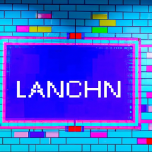

Test Title
At Wayfare India, we are always exploring new ways to leverage the power of technology for the benefit of our clients. One technology that we have been particularly interested in is GenAI, also known as Language Chain (LLM). GenAI is an artificial intelligence technology that is used to process natural language and generate more intelligent applications.
With GenAI, we have been able to create applications that can understand natural language and respond accordingly. We have used this technology in applications such as chatbots, customer service applications, and even in the legal sector.
Specifically, we have been using GenAI to create applications that can analyze legal documents and generate automated legal documents. This allows us to provide our clients with more efficient legal services. Additionally, we have been able to use GenAI to create applications that can detect and respond to legal issues within documents. This helps us detect potential legal issues at an early stage and take corrective action.
Overall, GenAI has been an invaluable tool for us in our legal services. We have been able to reduce the amount of time needed to analyze documents, as well as the cost of creating and maintaining legal documents. We look forward to continuing to explore the potential of GenAI and other artificial intelligence technologies.